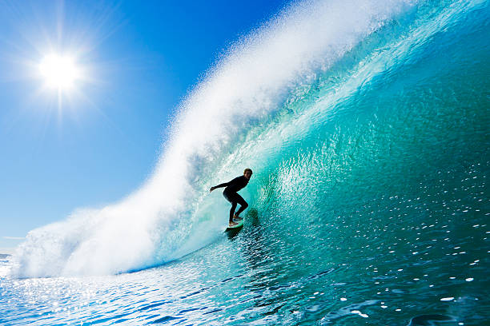

How to surf
Surfing is an extremely fun water sport, in which you ride waves. To surf you paddling out into the waves. Once you see the wave you want to ride you turn your board around. Than you palle as hard as you can and once you catch the wave you keep your wave even so you don't tip. Than you pop up both feet at once. Than you keep your balance and ride the wave. Once you get enough practice you can start to do tricks like the curve, cut back, foam climber, floater, tail side, superman, tail rider, and many more.
Types of surf boards
There are many different kinds of surfboards. Some examples of common boards are short board, fish, long board, foam, and hybrid. I personally prefer my custom made board.Usually you surf when it's warm, but sometimes the water is old so you wear a wetsuit. The types of wetsuits are shorty, long jon, semi dry, full, and triathlon suit.
Places to surf
Surfing is so much fun. It is relaxing and exciting at the same time. It is sometimes dangerous in some surf spots. Sharks thinks surfers look like seals underwater. Just be careful and you can stay safe. Still a lot of surf spots are beautiful and have great waves. These spots include of super bank Australia, Pipeline Ohau (hawaii), Bundoran Beach Donegal(ireland), Jeffery's Bay Africa, Lima Peru, El salvador, and many more.